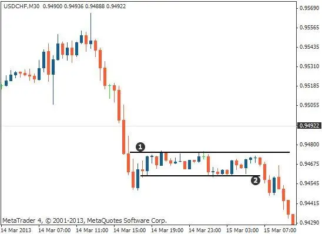

बेरिश रेक्टेंगल पैटर्न एक डाउनट्रेंड का सरणी चार्ट पैटर्न है इसे दो निम्नत्तियों के बीच के एक संक्षेप में वार्तालाप की
संशोधन से तैयार किया जाता है। यह पैटर्न आमतौर पर एक आयताकार के समान दिखता है, इसीलिए इसका नाम पड़ा।
बेरिश रेक्टेंगल पैटर्न सिग्नल करता है कि एक मजबूत डाउनट्रेंड है और
ट्रेडर्स आमतौर पर इसे ट्रेडिंग का अवसर के रूप में इस्तेमाल करते हैं। पैटर्न में
प्रवेश करने के लिए, ट्रेडर्स आमतौर पर रेक्टेंगल के निचले समर्थन स्तर को तोड़ने
की तलाश करते हैं।
रेक्टेंगल की ऊचाई रेक्टेंगल के किनारों के बीच की दूरी होती है।
रेक्टेंगल की चौड़ाई रेक्टेंगल के दोनों पक्षों के समयावधि की दूरी होती है।
बेरिश रेक्टेंगल पैटर्न एक भरोसेमंद ट्रेडिंग पैटर्न नहीं होता है,
लेकिन यह एक मजबूत डाउनट्रेंड का संकेत देता है और ट्रेडर्स इसे आमतौर पर
ट्रेडिंग का अवसर के रूप में उपयोग करते हैं।
